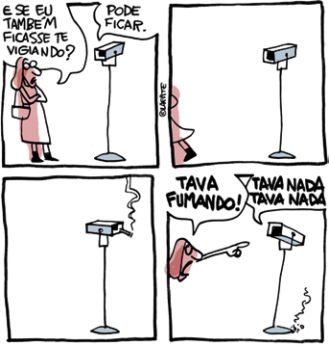

Foucault analisa o Estado sob a perspectiva do poder e das relações de controle. Para ele, o Estado moderno é uma rede de instituições e práticas que disciplinam os indivíduos e moldam a sociedade. Ele estuda como o poder se manifesta em diferentes formas, como prisões, escolas e hospitais, argumentando que o Estado utiliza tecnologias de poder para normalizar comportamentos e manter o controle social.
Michel Foucault, em sua obra *Vigiar e Punir*, explora como o poder se manifesta de forma descentralizada e sutil na sociedade moderna. Ele introduz o conceito de microfísica do poder, que se refere às relações de poder cotidianas, presentes em instituições como escolas, prisões e hospitais. Em vez de ser algo imposto por uma autoridade central, o poder circula e se expressa nas interações diárias, moldando comportamentos e regulando corpos.
Foucault destaca a transição de uma sociedade de punições visíveis (como torturas e execuções) para uma sociedade de disciplinamento e vigilância. Ele usa o conceito do Panóptico, uma estrutura arquitetônica que permite a vigilância constante, como metáfora para como o poder moderno age: invisível, mas eficaz, levando os indivíduos a se auto-vigilanciarem.
Esse processo de disciplinamento está ligado à normalização, em que as instituições moldam os comportamentos dos indivíduos conforme padrões desejados. Além disso, Foucault aponta a relação entre poder e saber, mostrando como o conhecimento (como as ciências médicas ou jurídicas) também exerce controle, criando normas sobre o que é considerado "normal" ou "desviante".
A obra de Foucault revela que o poder moderno não é apenas repressivo, mas também produtivo. Ele cria e reforça normas, identidades e formas de comportamento, controlando os indivíduos de maneiras sutis e, muitas vezes, invisíveis. Ao enfatizar o papel das instituições e da vigilância na formação do comportamento humano, Foucault propõe uma análise crítica de como a sociedade moderna organiza o poder e molda os sujeitos.
[...] “Eles sabem exatamente… quando você está trabalhando e quando não está”, diz um trabalhador de armazém do Walmart na Califórnia aos pesquisadores. Um trabalhador da Amazon na Carolina do Norte compara a experiência ao programa Squid Game da Netflix, afirmando que “A cada três dias, os primeiros socorros são chamados para [nossa] instalação. E quando digo que é como [Squid Game], você vê colegas, você vê amigos, alguns trabalhadores têm parentes, você vê parentes que desmaiam, que são retirados da instalação de maca.” Se você se machuca, explica um trabalhador do Walmart na Califórnia, é “quase sempre sua culpa. A administração não negociaria isso com você de jeito nenhum. Você seria penalizado por isso porque eles considerariam que você estava trabalhando de forma insegura e ignorariam todas as outras possíveis razões para você se machucar.”
Uma proporção maior de trabalhadores tanto da Amazon quanto do Walmart dizem que a velocidade com que trabalham é medida em detalhes pela tecnologia da empresa sempre ou na maioria das vezes: 72% dos trabalhadores da Amazon e 67% dos trabalhadores do Walmart, em comparação com 58% dos trabalhadores em outra pesquisa de 2023, que abrange toda a indústria de armazenagem. Da mesma forma, 77% dos trabalhadores da Amazon e 62% dos trabalhadores do Walmart relatam que a tecnologia pode “saber se [eles] estão ativamente engajados em [seu] trabalho” sempre ou na maioria das vezes. Isso se compara a 47% dos trabalhadores na indústria como um todo.
Este nível de vigilância não é apenas sobre monitoramento; é a base para um aumento implacável de velocidade. Três quartos dos trabalhadores da Amazon e 74% dos trabalhadores do Walmart relatam sentir pressão para trabalhar mais rápido pelo menos parte do tempo, e mais da metade dos trabalhadores de ambas as empresas relatam que suas taxas de produção dificultam o uso do banheiro pelo menos parte do tempo [...]
Disponível em: https://jacobin.com.br/2024/04/o-panoptico-esta-de-olho-nos-trabalhadores-da-amazon-e-walmart/
Texto II[...] Durante o Carnaval, as forças de segurança utilizaram câmeras de reconhecimento facial e drones para capturar mais de 140 suspeitos em diversos estados brasileiros, incluindo Bahia, Rio de Janeiro, São Paulo, Pernambuco e Minas Gerais. Na Bahia, 42 foragidos foram detidos, enquanto no Rio de Janeiro, 12 indivíduos foram identificados por meio dessa tecnologia. Em São Paulo, o sistema Smart Sampa contribuiu para a prisão de 11 criminosos. As prisões na Bahia ocorreram tanto em Circuitos de Carnaval quanto em áreas do interior, envolvendo suspeitos de crimes como roubo, tráfico de drogas e porte ilegal de armas [...]
Disponível em: https://jovempan.com.br/noticias/brasil/tecnologia-de-reconhecimento-facial-e-drones-aumentam-detencoes-no-carnaval-brasileiro.html
O leproso é visto dentro de uma prática da rejeição do exílio-cerca; deixa-se que se perca lá dentro como numa massa que não tem muita importância diferenciar; os pestilentos são considerados num policiamento tático meticuloso onde as diferenciações individuais são os efeitos limitantes de um poder que se multiplica, se articula e se subdivide. O grande fechamento por um lado; o bom treinamento por outro. A lepra e sua divisão; a peste e seus recortes. Uma é marcada; a outra, analisada e repartida. O exílio do leproso e a prisão da peste não trazem consigo o mesmo sonho político.
FOUCAULT, M. Vigiar e punir; nascimento da prisão. Petrópolis: Vozes, 1987.
Os modelos autoritários descritos no texto apontam para um sistema de controle que se baseia no(a):
A lei não nasce da natureza, junto das fontes freqüentadas pelos primeiros pastores; a lei nasce das batalhas reais, das vitórias, dos massacres, das conquistas que têm sua data e seus heróis de horror: a lei nasce das cidades incendiadas, das terras devastadas; ela nasce com os famosos inocentes que agonizam no dia que está amanhecendo.
FOUCAULT, M. Aula de 14 de janeiro de 1976. In: Em defesa da sociedade. São Paulo: Martins Fontes, 1999.
O filósofo Michel Foucault (séc. XX) inova ao pensar a política e a lei em relação ao poder e à organização social. Com base na reflexão de Foucault, a finalidade das leis na organização das sociedades modernas éO dispositivo panóptico organiza unidades espaciais que permitem ver sem parar e reconhecer imediatamente. Em suma, o princípio da masmorra é invertido; ou antes, de suas três funções — trancar, privar de luz e esconder — só se conserva a primeira e suprimem-se as outras duas. A visibilidade é uma armadilha. Fazer com que a vigilância seja permanente em seus efeitos, mesmo se é descontínua em sua ação; que a perfeição do poder tenda a tornar inútil a atualidade de seu exercício; que esse aparelho arquitetural seja uma máquina de criar e sustentar uma relação de poder independente daquele que o exerce.
FOUCAULT, M. Vigiar e punir: nascimento da prisão. Petrópolis: Vozes, 1987 (adaptado).
TEXTO II
LAERTE. Disponível em: www.laerte.art.br. Acesso em: 25 nov. 2021.
O objetivo do modelo de vigilância descrito nos textos I e II aponta para o(a)A economia das ilegalidades se reestruturou com o desenvolvimento da sociedade capitalista. A ilegalidade dos bens foi separada da ilegalidade dos direitos. Divisão que corresponde a uma oposição de classes, pois, de um lado, a ilegalidade mais acessível às classes populares será a dos bens — transferência violenta das propriedades; de outro, à burguesia, então, se reservará a ilegalidade dos direitos: a possibilidade de desviar seus próprios regulamentos e suas próprias leis; e essa grande redistribuição das ilegalidades se traduzirá até por uma especialização dos circuitos judiciários; para as ilegalidades de bens — para o roubo — os tribunais ordinários e os castigos; para as ilegalidades de direitos — fraudes, evasões fiscais, operações comerciais irregulares — jurisdições especiais com transações, acomodações, multas atenuadas etc.
FOUCAULT, M. Vigiar e punir: nascimento da prisão. Petropolis: Vozes, 1987.
O texto apresenta uma relação de cálculo politico-econômico que caracteriza o poder punitivo por meio da